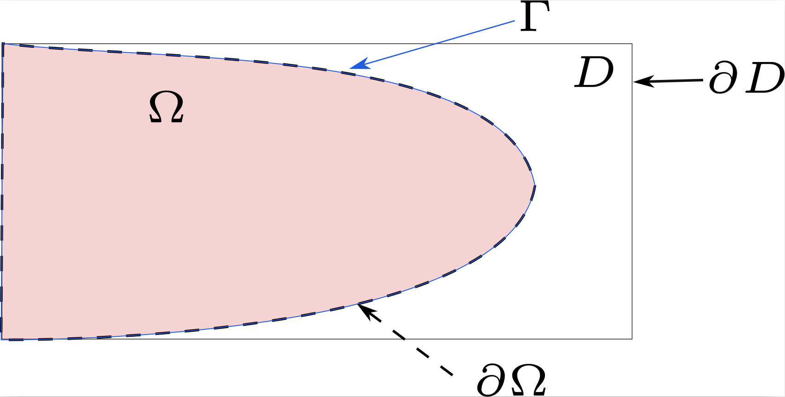
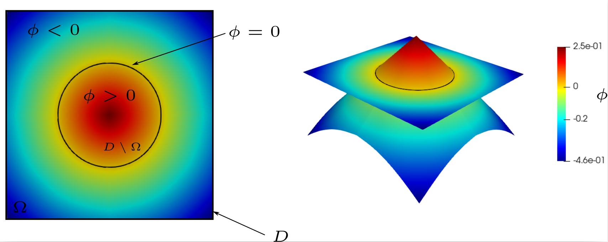

Shape optimization method¶
Problem definition¶
We seek an optimal shape, \(\widetilde{\Omega}\subset\mathbb{R}^{n}\), \(d\in\left\{2,3\right\}\), that minimizes a cost function of the structure for a linear elastic material in a fixed working domain \(D\) subject to Dirichlet and Neumann boundary conditions.
with \(\mathcal{O}\) a subset of the fixed working domain, \(D\).
The objective function \(J\) is defined as:
where \(j\) is a function defined from \(\Omega\) to \(\mathbb{R}\) and dependent on the displacement field \(u\) solution of a PDE.
Inequality and equality constraint can be imposed in the shape optimization problem.
Function of equality constraint is denoted \(C_{1}\) and defined by \(C_{1}:\mathcal{O}\rightarrow\mathbb{R}\).
Function of inequality constraint is denoted \(C_{2}\) and defined by \(C_{2}:\mathcal{O}\rightarrow\mathbb{R}\).
General shape optimization problem is written:
Boundaries definition:¶
Let \(\Gamma\) denote the free boundary, \(\partial\Omega=\Gamma\cup\left[\partial D\cap\overline{\Omega}\right]\) denote the boundary of \(\Omega\).
One will also distinguish \(\Gamma_{D}\) , the part of the boundary where Dirichlet conditions are applied, and \(\Gamma_{N}\) , the part where Neumann conditions are applied, such that \(\Gamma=\Gamma_{D}\cup\Gamma_{N}\) and \(\Gamma_{D}\cap\Gamma_{N}=\emptyset\). To clarify these definitions, a diagram is given in Figure 15.


Figure 15 Illustration of the boundaries of the problem definition.¶
Augmented lagrangian Method¶
Augmented Lagrangian Method is used to solve the constrained optimization problems defined by (5). Here, we provide a concise overview of the ALM method. We begin by considering the following problem:
where \(C(\Omega)=0\) represents an equality constraint.
The problem is reformulated as an equivalent min-max problem:
where \(\alpha\) is a Lagrange multiplier, and \(\beta>0\) is a penalty term.
The quadratic term helps to stabilize the convergence toward a feasible solution and stabilizes the solution to minimize oscillations. The min-max problem is solved using a gradient iterative method, in which, the Lagrange multiplier and the penalty parameters are updated at each iteration as follows:
where \(\Omega^{n}\) is the domain at iteration \(n\), \(\hat{\beta}\) is the upper limit of the penalty parameter and \(k\) is a multiplication coefficient.
Céa Method¶
Céa’s method proposed in [Cea86] enables to overcome the calculation of complex shape derivative terms.
First, a Lagrangian function is introduced and defined as:
The minimization problems (4) without equality and inequality constraints, is equivalent to finding the extremum \(\left(\Omega_{\text{min}},u_{\Omega_{\text{min}}},p_{\Omega_{\text{min}}}\right)\) of the Lagrangian function, solution of the following optimization problem: several Find \(\left(\Omega_{\text{min}},u_{\Omega_{\text{min}}},p_{\Omega_{\text{min}}}\right)\) such that
For all \(\Omega\in \mathcal{O}\), in \(u=u_{\Omega}\) (solution of equation (8)), we have:
The saddle point of the Lagrangian is determined by the following problems: Find \(u_{\Omega}\in V\) such that:
Find \(p_{\Omega}\in V_{0}\) such that:
According to (6) and with the definition of the saddle point \(\left(u_{\Omega},p_{\Omega}\right)\) the shape derivative of cost function in direction \(\theta\) is written by composition:
with :
Mechanical model¶
In our implementation, we consider a linear elastic isotropic material. In the following, we detail the assumptions and equations of the mechanical model.
Material behavior :¶
Assuming the material behavior of the domain \(\Omega\) is linear isotropic elastic, with Hooke’s law we have the following relationship between the stress tensor \(\sigma\) and the strain tensor \(\epsilon\) :
where \(\lambda\) and \(\mu\) are Lamé moduli of the material.
We seek the displacement of the material, \(u\), such that :
Note
We assume small deformations and zero volumetric forces.
Weak formulation of Linear elasticity¶
Find \(u_{\Omega}\in V(\Omega)=\left\{ u\in\left[H^{1}(\Omega)\right]^{d}\mid u_{\mid\Gamma_{D}}=u_{D}\right\}\), such that \(\forall v\in V_{0}(\Omega)=\left\{ u\in\left[H^{1}(\Omega)\right]^{d}\mid u_{\mid\Gamma_{D}}=0\right\}\)
where for all \(u\in V(\Omega)\) and \(v \in V_{0}(\Omega)\) :
with \(\varepsilon(u)=\frac{1}{2}\left(\nabla u+\nabla^{t}u\right)\).
Level set method¶
Level set method is used to describe \(\Omega\) and to capture its evolution.
Domain definition¶
Domain, \(\Omega\), is described by a function \(\phi:D\rightarrow\mathbb{R}\), which is


Figure 16 Domain defined by a level-set signed distance function.¶
There are several level-set functions to define \(\Omega\). However, we are interested in level-set functions with signed distance property to address numerical aspects.
A level set function with signed distance property with respect to \(\phi(x)=0\) is defined as:
where \(d\) is the euclidean distance function distance defined as:
Advection¶
To advect \(\phi\) following the velocity field \(\theta_{\text{reg}}\) (extended and regularized over the whole domain \(D\)), we solve a transport equation, defined as:
For motion in the normal direction it’s equivalent to solve the following equation:
Note
In the context of shape optimization, \(t\) corresponds to a pseudo-time, a descent parameter in the minimization of the objective function.
Instead of solving the Hamilton-Jacobi equation (9) using the Finite Difference Method, Finite Element Method is used.
For the computation of the temporal derivative, we adopt the explicit Euler method between \(0\) and \(T\) (in an arbitrary fixed number of time steps \(\Delta t\)) :
Here, \(\phi_{n}\) is the previous iterate, and \(n\) parameterizes \(\Omega_{n}\). To solve the minimization problem (4), the descent step \(\Delta t\) of the gradient algorithm is chosen such that:
Note
Moreover, in order to verify the stability conditions of the explicit Euler scheme, the time step must satisfy the following Courant-Friedrichs-Lewy (CFL) condition:
where \(v_{\text{max}}\) is the maximum value of the normal velocity and \(c\in\left]0,1\right]\) is a chosen parameter.
Extension and regularization¶
Note
The definition of the descent direction is ambiguous. The field is only defined on the free boundary. Implementing an extension of \(v\) is necessary to have a velocity field defined over the entire domain \(D\). Moreover, the regularity of the \(v\) field is not sufficient to ensure the mathematical framework of the notion of shape derivative in Hadamard’s sense (as the space \(L^{2}\left(\Gamma\right)\) is not a subspace of \(W^{1,\infty}\left(\mathbb{R},\mathbb{R}\right)\)), so a regularization is needed.
In our study, extending and regularizing the velocity field involves solving the following problem: Find \(v'_{\text{reg}}\in H_{\Gamma_{D}}^{1}=\left\{ v\in H^{1}\left(D\right)\text{ such that }v=0\text{ on }\Gamma_{D}\right\}\) such that \(\forall w\in H_{\Gamma_{D}}^{1}\)
with \(\mathcal{J}\) the cost function.
Next, we define the normalized velocity field:
This normalization enables the following equality to hold:
Note
Then, to respect the small deformation hypothesis of the Hadamard method, we multiply by a constant smaller than 1. Alternatively, we can equivalently choose to use an adaptive time step strategy to ensure convergence.
Note
Implementation Note: The Riesz representation and velocity normalization are computed efficiently using PETSc KSP solvers within the velocity_tools.py module.
Reinitialization¶
During the advection process, the level-set function inevitably loses its signed-distance property (i.e., the magnitude of the gradient deviates from unity, \(|\nabla \phi| \neq 1\)). If left uncorrected, this distortion leads to severe numerical instabilities such as the flattening or steepening of the level-set field, compromising both the geometry representation and the boundary integrals.
To maintain robustness, OptiCut periodically restores this metric property by solving a reinitialization problem. Rather than using standard fast-marching or conventional PDE approaches which can shift the interface, OptiCut features a highly accurate finite-element-based predictor-corrector scheme. This approach ensures high fidelity of the zero-isocontour location while effectively recovering the signed distance over the computational domain.
For a comprehensive mathematical description and validation of this reinitialization strategy, we refer the reader to our recent work [ElBachariRY+26].
Note
Implementation Note: This operation is handled by the Reinitialization class located in levelSet_tool.py. Users can control the frequency of this step via the step_reinit parameter.